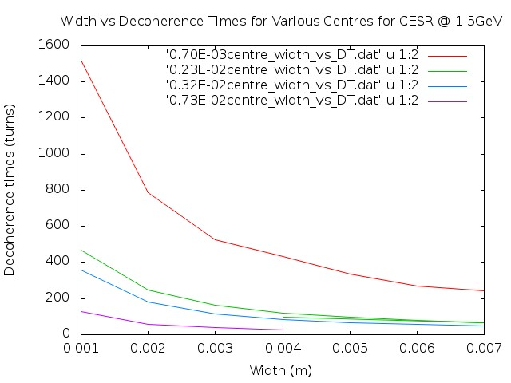
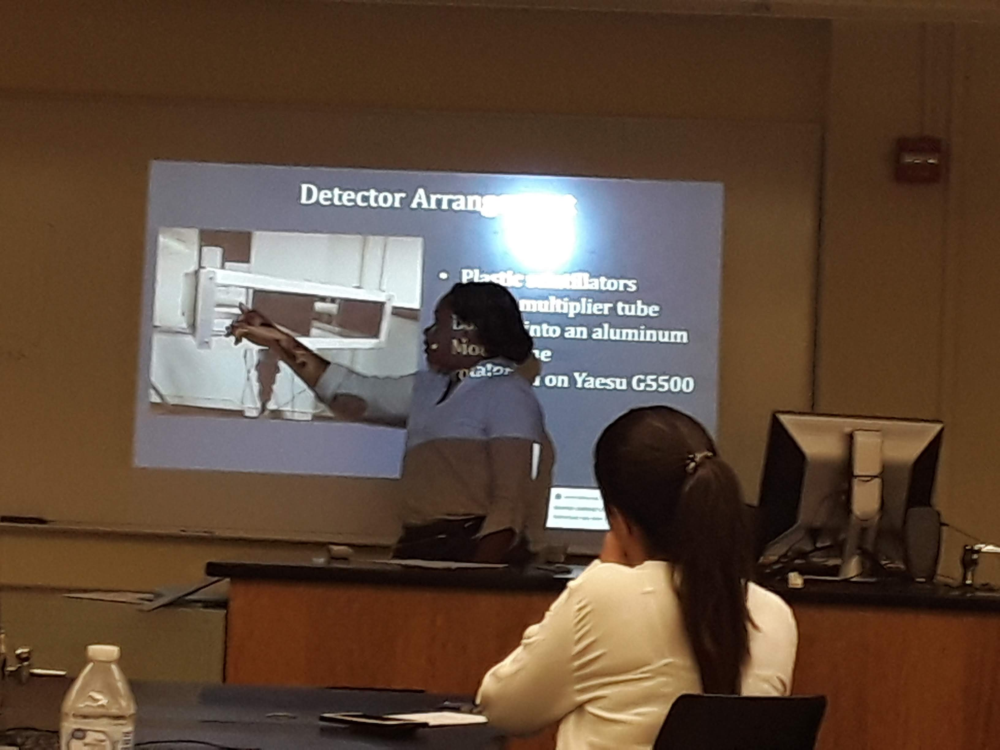

My 3 P's.
"My 3 P's" is my little gimmick to showcase my three main professional competencies. Each competency is followed by a few points of evidence.
Physics (and Programming)
I went to school to learn physics and came away with quantitative skills, foundation in programming and strong problem solving capabilities.



- The feasibility of electron beam slip stacking in EIC Rapid Cycling Synchrotron (BNL 2022, image 2 credit: BNL)
- Tracking Sagittarius A* with Cosmic Ray Tracking Detector (featured on quarknet.org (QCC 2019)
- Decoherence Simulation Studies for CESR at Low Energies (Cornell 2018)
- Check out this project solving Poisson PDE : using relaxation method generating heatmap. (Computation in Physics and Astronomy, Stony Brook University, Spring 2021)
- I created this very website from scratch using HTML and CSS. Hosted on Github (2024)
Undergraduate Research Project Titles
Project Management
- Founded and co-managed peer mentorship program of 18 physics undergraduates, winning $500 in funding from the Future Faces of Physics Award.
- Created and run weekly science communication event entitled Physics Cafe as part of work on SPS executive board (Stony Brook 2022)
- Organized a math outreach masterclass: "M^2" Mindset multiplies Math, disheartened by prevalent negative attitudes concerning math at my communnity college, received $100 in funding from Student Government Association.
Penmanship
My "penmanship" is about all things communication: from talks to articles.



- Numerous informal and formal research presentations including conferences such as National Mentoring Conference 2020 and Conference for Undergraduate Women in Physics 2020 among others.
- Speaker at 2020 New York Community College Trustee Institute on October 16th 2020.
- Read this article I wrote about accelerator-based techniques for the study of cultural heritage objects onthe IAEA Accelerator Knowledge Portal.